Manipulating balloons
After you place a balloon or balloon stack, you can use its handles to adjust its position and orientation. The handles are not visible until you select the balloon.
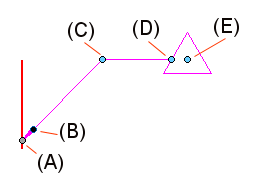
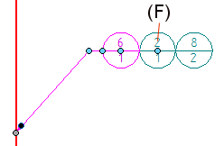
For more information, see the help topic Edit an annotation.
|
Handle |
Purpose |
Uses |
|---|---|---|
|
(A) Connection handle |
Connects the balloon to an element or free space point. |
Moves the start point of the leader along the annotated element. Alt+drag to change parent geometry. This disconnects the leader and removes associativity. Pressing Alt+Ctrl disconnects the leader, yet preserves associativity. |
|
(B) Terminator handle |
Changes the terminator type. |
|
|
(C) Leader edit handle |
Moves the balloon freely by changing the leader line length and orientation. |
With a leader line and a break line: 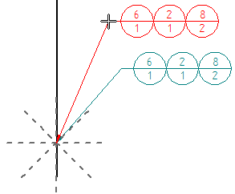 Without a break line, the leader edit handle is the same as the move handle. 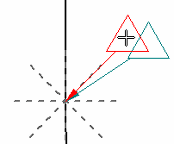 Inserting vertices into the leader line adds edit points. |
|
Alt+drag changes the leader line connection point to the balloon. |
Without a break line, Alt+drag displays keypoints for you to snap the leader to a different connection point on the balloon. 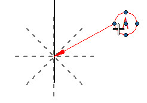 |
|
|
(D) Break line edit handle |
Drags the annotation horizontally. |
Resizes the break line to adjust the position of the annotation horizontally. 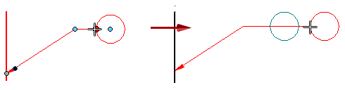 Flips the balloon and break line to the opposite side of the leader. |
|
Alt+drag changes the break line attachment point on the balloon. |
Displays eligible snap points on the balloon: 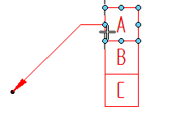 The new orientation of the break line is always perpendicular to the dashed line indicator. 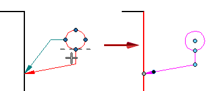 |
|
|
(E) Move handle |
Moves the balloon freely even when there is no leader or break line. |
Moves the balloon by adjusting the leader length and orientation freely. The break line length and angle do not change. 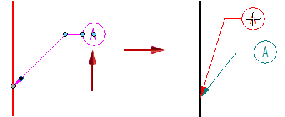 |
|
(F) Balloon stack edit handle |
Transforms the stack orientation. |
Changes the stack arrangement from horizontal to vertical, or from vertical to horizontal. 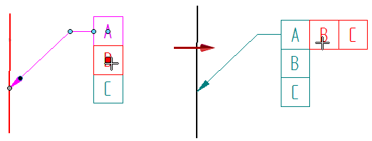 |
|
(G) A vertical balloon stack with an underline balloon shape and a break line has one more handle. 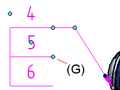 |
If: Stack=Vertical Shape=Underline |
Drags the vertical line on the stack to the opposite side of the annotation. 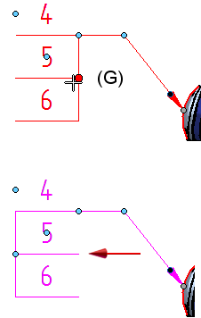 |
 Displays a list of terminators for you to change the terminator type.
Displays a list of terminators for you to change the terminator type.How do I
Edit an annotationPlace a balloon
Automatically add balloons to a part view
Stack balloons
Edit balloon text in a stack
Show document properties in balloons
Learn more
BalloonsLook up more details
Balloon commandBalloon command bar
Balloon Properties dialog box
General tab (Balloon Properties dialog box)